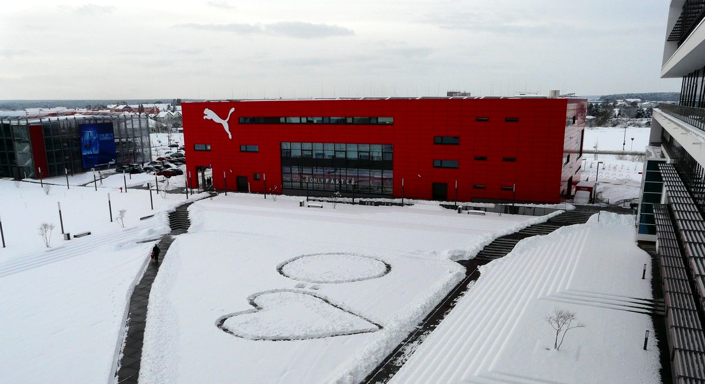

Содержание
История
Вскоре после Первой мировой войны, в начале 1920-х годов, Дасслеры на семейном совете решили организовать
семейное дело — пошив обуви. Первой продукцией семьи Дасслер были домашние тапочки и ортопедическая обувь
для тренировок спортсменов-инвалидов (которых было много после войны). Материалом для них служило списанное
военное обмундирование, а подошвы вырезали из старых автомобильных покрышек. Основную роль в этом семейном
предприятии играли братья Адольф (Ади) и Рудольф (Руди) Дасслеры, в 1924 году они официально
зарегистрировали «Обувную фабрику братьев Дасслер» («Gebrüder Dassler»). Два брата с противоположными
характерами дополняли друг друга — Адольф — спокойный и уравновешенный производитель, в то время, как
Рудольф — активный и коммуникабельный продавец[3]
В 1925 году Адольф изобрёл и сшил первые в мире футбольные бутсы с шипами. Футбольная модель оказалась
удобной и вместе с гимнастическими тапочками стала основной продукцией Дасслеров. Спрос на их обувь был
столь велик, что в 1926 году они смогли построить фабрику, на которой работало 25 человек и которая
выпускала до 100 пар обуви в день. В 1928 году шиповки братьев, разработанные вместе с Джозефом Вайтцером,
получают патент немецкого бюро. На летних олимпийских играх 1928 года в Амстердаме обувь братьев впервые
появляется на крупных спортивных соревнованиях. На Олимпиаде 1932 года в Лос-Анджелесе немец Артур Йонат,
выступая в обуви «Дасслер», стал третьим в беге на 100 метров. Это стало первым серьёзным успехом рекламной
кампании, основанной на сотрудничестве со спортсменами[3].
После начала Второй мировой войны, несмотря на то, что оба брата Дасслер были убеждёнными членами нацистской
партии, фабрики Дасслеров подверглись конфискации нацистами, а сами братья отправились на фронт. На одной из
фабрик нацисты попытались наладить производство ручных противотанковых гранатомётов, однако фабричное
оборудование было не приспособлено для такого производства, поэтому Адольфа вернули из армии через год —
производить тренировочную обувь для немецких солдат[3].
Баварский городок Херцогенаурах попал в американскую зону оккупации. Рудольф попал в лагерь для
военнопленных, фабрика Дасслеров поставляет в Соединённые Штаты 1000 хоккейных коньков по условиям
контрибуции. В качестве компенсации за коньки она получает списанную амуницию армии США — палатки, старые
бейсбольные перчатки и т. д. В 1946 году оккупация закончилась, Рудольф вернулся из лагеря для
военнопленных. Семейное дело братьям пришлось поднимать почти с нуля. Обувь «Дасслер» опять производилась из
остатков военной амуниции, а 47 наёмных работников получали зарплату товаром (дровами, пряжей и т. п.)[3].
Весной 1948 года, вскоре после смерти отца, братья расстались вследствие ссоры. Рудольф забрал себе новую
фабрику, а Адольф — старую. Они условились не использовать название и символику семейного предприятия. Ади
назвал свою фирму Addas, а Руди свою — RuDa (от Rudolf Dassler). Но уже через несколько месяцев Addas
превратился в Adidas (сокращение от Ади Дасслер), а Ruda — в Puma. Так прекратил существование всемирно
известный в то время бренд — Dassler. Сами братья до конца своих дней хранили молчание о причинах ссоры.
Возможно, Руди так и не смог простить Ади, что после войны тот не попытался вызволить его из лагеря для
военнопленных, используя знакомство с американскими офицерами. А может быть, они просто не смогли разделить
наследство отца. В любом случае после развала семейного предприятия братья друг с другом не разговаривали
(кроме как в суде), а Puma и Adidas стали самыми ожесточёнными конкурентами.
Собственники и руководство
Компания производит спортивную экипировку под торговыми марками Puma и Tretorn, имеет дочерние отделения в США (около 20 % общих продаж), Франции, Швейцарии, Испании, Гонконге. Свыше 1/3 продукции, производимой в Германии, экспортирует. Компании (на апрель 2008 года) принадлежит сеть из 116 магазинов (в том числе 20 — в России). Численность персонала на 2006 год составляла 6,8 тыс. человек. Выручка в 2007 году составила 2,37 млрд евро (в том числе оборот сети магазинов — 406,4 млн евро), чистая прибыль — 269 млн евро[4].
Деятельность
Компания производит спортивную экипировку под торговыми марками Puma и Tretorn, имеет дочерние отделения в США (около 20 % общих продаж), Франции, Швейцарии, Испании, Гонконге. Свыше 1/3 продукции, производимой в Германии, экспортирует. Компании (на апрель 2008 года) принадлежит сеть из 116 магазинов (в том числе 20 — в России). Численность персонала на 2006 год составляла 6,8 тыс. человек. Выручка в 2007 году составила 2,37 млрд евро (в том числе оборот сети магазинов — 406,4 млн евро), чистая прибыль — 269 млн евро[4].
Рекламная и спонсорская деятельность
Puma сотрудничает с такими футболистами, как Антуан Гризманн, Сеск Фабрегас, Марко Ройс, Марио Балотелли, Санти Касорла, Оливье Жиру, Бакари Санья, Неймар и другими. Также Puma широко известен своими крупными спонсорскими контрактами с известными спортсменами и спортивными командами, особенно в сфере футбола. Puma подписывала спонсорские контракты с такими известными футбольными клубами как, «Милан», «Боруссия Дортмунд», «Валенсия», «Арсенал», «Краснодар», «Шахтёр» и др., а также с сербской, итальянской, швейцарской, австрийской, чешской, уругвайской, египетской, сенегальской, парагвайской, словацкой, кот-д’ивуарской национальными футбольными сборными. В 2014 году компания подписала контракт с футбольным клубом «Арсенал» на 5 лет, в течение которого они заплатили 150 миллионов евро. С 1 июля 2018 года Puma стала новым техническим спонсором «Милана», подписав первое соглашение с итальянским клубом сроком на 5 лет. От Puma красно-чёрные, с учётом возможных бонусов, получают больший объём выплат в сравнении с бывшим техническим партером «россонери» — «Adidas»[5].